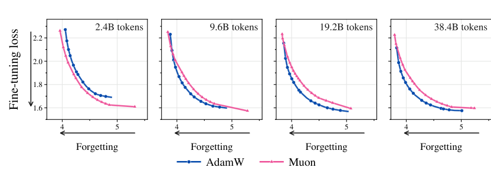

Muon's fine-tuning lead runs out after a similar token count at every size tested
Across a CMU preprint's 30M-to-600M models, AdamW pretraining takes the lead between 2.4 and 19.2 billion tokens, and production models pretrained with Muon have seen trillions.
Muon pretrains better and still loses the fine-tuning trade
In a CMU preprint covering about 600 pretraining runs from 30M to 600M parameters, Muon reaches lower pretraining loss than AdamW in every cell. Past a crossover budget, though, the AdamW-pretrained model learns a fine-tuning task with less forgetting.1 The authors report that crossover as a token-to-parameter ratio that falls as models grow. Counted in tokens, all 20 of their crossovers sit between 2.4 and 19.2 billion. Every Muon-pretrained production model with published counts has seen about 300 times as many or more, at sizes the paper never ran.
Where AdamW's frontier pulls ahead
The paper fine-tunes each optimizer's lowest-pretraining-loss 60M model on StackMathQA across a sweep of learning rates. Each run gives a fine-tuning loss and a forgetting loss on held-out DCLM text, and the lower-left hull of those points is the frontier.1

At 2.4 billion pretraining tokens Muon's curve sits below AdamW's along its whole length. By 9.6 billion the curves have swapped. The crossover is the smallest budget on the paper's doubling grid where AdamW's frontier wins, here 4.8 billion tokens, or 80 per parameter. Muon-pretrained models are fine-tuned with both optimizers and the runs pooled, so the fine-tuning optimizer does not handicap them.1
The authors explain the reversal with a margin-to-spread ratio: the correct logit's mean lead over the wrong ones, divided by the wrong logits' spread. The larger it is, the more wrong answers stay below the right one when fine-tuning perturbs the outputs, and AdamW's overtakes Muon's as the budget grows. Their theorem compares Muon with gradient descent, not AdamW, and covers the budget reversal but not the fall with size.1
Twenty crossovers inside one token band
StackMathQA's crossover is 320 tokens per parameter at 30M and 10 at 600M.1 In tokens those are 9.6 and 6.0 billion. A least-squares fit of log crossover ratio against log size over all 20 cells has a slope of −0.97, and a crossover fixed in tokens would give exactly −1. The paper does not make this observation.
The fit is not tight. From 30M to 600M the ratio falls 8-fold on Alpaca and 64-fold on MusicPile, and Alpaca's token crossover rises from 4.8 to 12 billion. Each value is a point on a doubling grid, from one base model per optimizer, with no seeds or error bars.1 Across the 20 cells the ratios vary 128-fold and the token counts 8-fold.
At the Chinchilla-optimal 20 tokens per parameter, a 600M model has seen 12 billion tokens and is at or past its crossover on all four sets.1
Production models, on either parameter count
Kimi K2, a mixture-of-experts model, was pretrained on 15.5 trillion tokens: 475 per active parameter and 15 per total parameter.2
On the ratio scale, K2's total-parameter ratio falls below the 600M Alpaca crossover of 20, the only placement the convention changes. On the token scale the convention drops out. Every model sits between 5.7 and 28.5 trillion tokens, about 300 to 1,500 times the largest measured crossover.
None of these placements is tested. The production models are mixture-of-experts, with up to 67 times the active parameters of the paper's largest dense model. The preprint names Kimi K2 and GLM-4.5 as Muon-pretrained but says of scale only that the falling crossover “suggests that the problem persists as we scale.”1
Moonlight's twin runs point the other way
Moonshot AI's report on Moonlight has the one matched comparison at production scale. Moonlight-A “follows the same training settings as Moonlight, except that it uses the AdamW optimizer.” Both 1.2-trillion-token checkpoints were fine-tuned with each optimizer.3
| Pretrain / SFT | MMLU | HumanEval | MBPP | GSM8K |
|---|---|---|---|---|
| Muon / Muon | 55.7 | 57.3 | 55.6 | 68.0 |
| AdamW / Muon | 55.3 | 53.7 | 55.5 | 62.1 |
| Muon / AdamW | 50.2 | 52.4 | 55.2 | 64.9 |
| AdamW / AdamW | 52.0 | 53.1 | 55.2 | 64.6 |
Paired the way the preprint pairs them, AdamW with AdamW and Muon with its best, the Muon pipeline wins all four benchmarks at 62 times the top of the token band. With AdamW fine-tuning on both, the result splits. The test has one run per arm and measures no forgetting. Its checkpoints also predate cooldown, and Wen and colleagues found that optimizer rankings at intermediate checkpoints can flip once the learning rate decays.8
The preprint, a single version-1 release, sweeps only the peak learning rate and fixes weight decay at 0.1 for both optimizers. Its authors hypothesize that the falling crossover comes partly from Muon's shrinking pretraining advantage,1 which a second paper from Wen's group observes “when using standard constant decoupled weight decay,” the preprint's setting.9
For dense models from 30M to 600M, AdamW pretraining gives the better learning–forgetting trade by 19.2 billion tokens at every size. Production models sit trillions of tokens further on, where the one matched test favored Muon without measuring forgetting. Until someone measures held-out pretraining loss after fine-tuning a matched pair that large, the reversal is a finding about models under a billion parameters.
Sources
- Li et al., Carnegie Mellon · Pretraining Data Scale Reverses the Muon-AdamW Fine-Tuning Gap, arXiv 2611.03633v1
- Moonshot AI · Kimi K2: Open Agentic Intelligence, arXiv 2507.20534
- Moonshot AI · Muon is Scalable for LLM Training, arXiv 2502.16982
- Moonshot AI · Kimi Linear: An Expressive, Efficient Attention Architecture, arXiv 2510.26692
- Arcee AI · Arcee Trinity Large Technical Report, arXiv 2602.17004
- Zhipu AI and Tsinghua University · GLM-4.5: Agentic, Reasoning, and Coding (ARC) Foundation Models, arXiv 2508.06471
- Zhipu AI · GLM-5: from Vibe Coding to Agentic Engineering, arXiv 2602.15763
- Wen et al., Stanford · Fantastic Pretraining Optimizers and Where to Find Them, arXiv 2509.02046v3
- Wen et al. · Fantastic Pretraining Optimizers and Where to Find Them II: Hyperball Optimization, arXiv 2606.16899v2